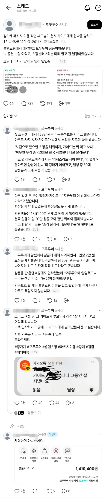

난리난 중국 "장가계" 패키지 여행 가이드 감금 협박
댓글
요모투어에서 장가계 현지 여행사 프라이빗 투어로 다녀왔는데 대만족! 가족 4명인데 패키지에서 조금만 더 내면 편하고 느긋하게 맛집까지 즐기다 옴. 진짜 싼게 비지떡이라는 말이 딱 맞음.
오케이.
홈앤쇼핑, 모두투어 모두 거를게요
나는 하나투어 비싼걸로 노쇼핑 장가계 가족들이랑 갔는데 만족스러웠음 비수기라 사람도 적고 가이드도 조선족이였는데 빠릿하더라
모두투어 그래도 하나투어 다음 아님? ㄷㄷ 대처가 ㅋㅋㅋ
일단 저기나온 두곳은 거르면 되겠네
그리고 개드립에 선족새끼들 존나많네 ㄹㅇ 무슨 실드칠걸쳐라 ㅆㅂ
저 회사꺼는 하면 안되는거네